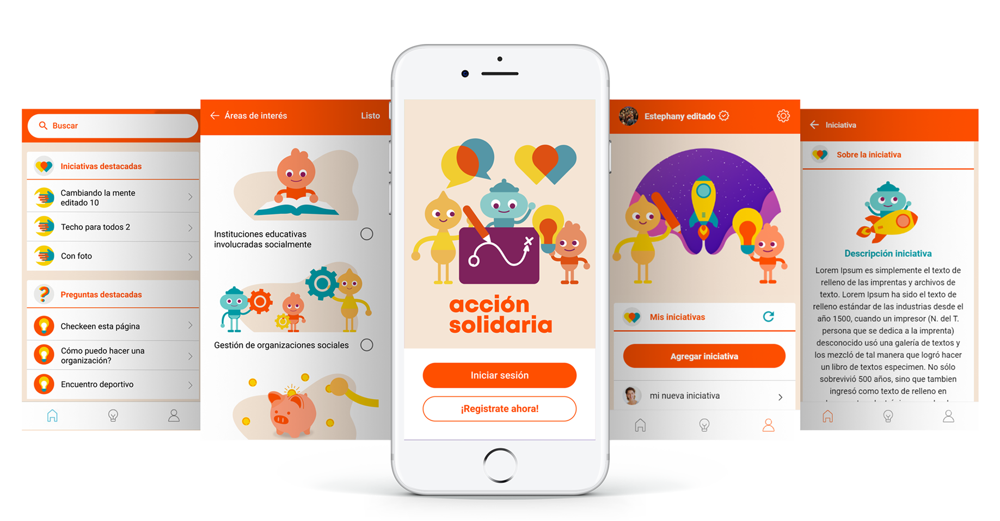

Proyecto realizado para Acción Solidaría del Hogar de Cristo de Chile. El cual tiene como visión “Promover, ordenar y proveer información y experiencias sociales de forma accionable a los distintos emprendedores y organizaciones sociales”

Este proyeco tuvo como base la metodología agile y tuvo una duración de 6 meses, donde estuve involucrada en todas las etapas del proyecto, estás fueron las siguientes: Descubrimiento, ideación, prototipado y testeo, definición de MVP y desarrollo del MVP.
Y en cada una de estas etapas se tuvo siempre presente los principios guías (inclusivo, privacidad de datos, personalización, confiable, simplicidad y agilidad, transparente, innovación y medible) y arquetipos para alcanzar la visión del producto.
Los arquetipos en los que nos enfocamos (y para quienes diseñamos) son el usuario especialista: personas con un gran espiritu
de colaboración que aportan a su entorno desde su área de expertis. Algunos trabajan de forma paralela en trabajos relacionados a su área. Y el usuario novato: Persona en etapas tempranas
de su primer emprendimiento social, con mucha pasión y energía. Visionarios que en paralelo a su trabajo principal inician su causa.
Es un un espacio para impulsar tu acción social compartiendo y aprendiendo sobre experiencias de manera simple y ordenada. "Empodérate y promueve tu iniciativa, guiado por la comunidad de Acción Solidaria." Proyecto realizado con Adobe Xd para wireframes y prototipado, Ionic 4 para desarrollo y Adobe Illustrator para las ilustraciones.
Se realizaron personajes ilustrados con la paleta de colores asociados al nuevo branding de Acción Solidaria, con el fin de hacer más amigable y cercana la aplicación. Los personajes al no tener forma humana promueve la diversidad sin encasillarnos en un solo estereotipo de persona.